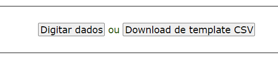
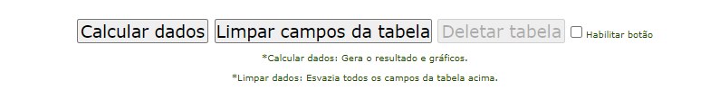

Vá ao menu entrada manual e role a página para baixo.
Informe os valores em cada campo (vide imagem abaixo):
Se preferir informar os dados digitando-os diretamente nos campos,
Clique no botão "Digitar dados" (figura abaixo):

Perceba que aparecerão os campos para a digitação (figura abaixo):
Informe os valores, campo-a-campo. Caso deixar algum campo vazio será exibido um alerta.
Após terminar a digitação dos dados, clique no botão "Calcular dados" (na parte inferior dos campos)

Caso possua uma planilha com os dados previamente digitados, como por exemplo uma planilha do Excel, salve-a com o tipo .CSV delimitado por ponto-e-vírgula.
Certifique-se que a planilha atende ao modelo informado. Caso contrário, haverá um erro.
É possível baixar um template (modelo) de planilha CSV para preenchimento no computador e posterior upload para este aplicativo web.
Para baixar um template (após ter realizado so passos do início) clique no botão "Download do template CSV".